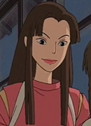

Yumi Tamai is a Japanese actress, voice actress and singer. She is memeber of the performance group Psalm(SARM).
- Gender: Female
- Birthday: August 6, 1977
- Hometown: Tokyo, Japan
| |
Yumi Tamai is a Japanese actress, voice actress and singer. She is memeber of the performance group Psalm(SARM).
|
|---|
|  | Lin | Spirited Away | Lin is a worker at the bathhouse who becomes Chihiro's caretaker. Although cold at first, she warms up to Chihiro and grows a strong bond with her. |
Go Back to Main Page |
Go Back to Homepage |
|
|
|
OR |
|